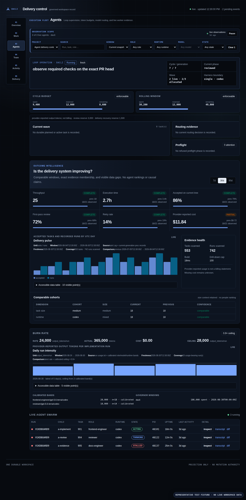

Coding agents need
a delivery system.
dacli turns agent work into a durable record of what was planned, built, verified, and landed.
The engineering lead becomes
the coordination layer.
One agent writes code. A team of agents needs ownership, shared context, review, and a way to know what actually shipped.
Who owns each file? What must this task prove?
Which worker is blocked? What budget remains?
Did the reviewed change reach the intended branch?
Let agents judge.
Make the process checkable.
Sets direction, credentials, exceptions, and release authority.
Enforces scope, budgets, state transitions, recovery, and delivery evidence.
Plan, implement, test, and review through the selected coding harness.
The first proving ground
is dacli itself.
dacli is developed using dacli.
Task attribution, isolated worktrees, and a reproducible empty-repository-to-shipped-code fixture make the delivery process inspectable.
The deterministic fixture proves coordination. It is not a benchmark of model quality or customer traction.
A shared view of progress.
Evidence behind every state.

One task. A chain of evidence.
-
Select
Ready work, dependencies, and critical-path priority.
-
Isolate
A scoped brief, worktree, path claim, and bounded run.
-
Verify
Repository checks and observable acceptance criteria.
-
Review
An independent verdict bound to the exact tree.
-
Land
GitHub checks and observed merge state before completion.
Keep the coding harness.
Add delivery control.
| Layer | Its job |
|---|---|
| Codex, Claude Code, Gemini CLI, Copilot CLI | Provide the coding-agent runtime. |
| GitHub issues, pull requests, and CI | Provide collaboration, checks, and merge evidence. |
| dacli | Coordinate the task lifecycle across agents and preserve its evidence. |
A run stays on its selected harness. Cross-harness routing requires an explicit allowlist and hybrid configuration.
Start with one repository.
Earn the next run.
The initial wedge is an engineering team already using coding agents, with a backlog and a delivery process worth preserving.
Declare the acceptance criteria and inspect the recorded result.
Expand only after scope, review, cost, and recovery are understood.
An open core today.
A larger operating layer ahead.
Available now
The open-source repository workspace, CLI, MCP server, dashboard, and bounded orchestration workflows.
BSD-3-Clause licenseExpansion direction
A hosted control plane for shared operations across repositories and tenants. The repository documents its implementation and deployment boundaries.
This is a product direction, not a claim of a generally available hosted service or paid plan.
Bring one real task.
Inspect what ships.
Start with the dashboard. Read the operating model. Run a bounded task on a repository you know.